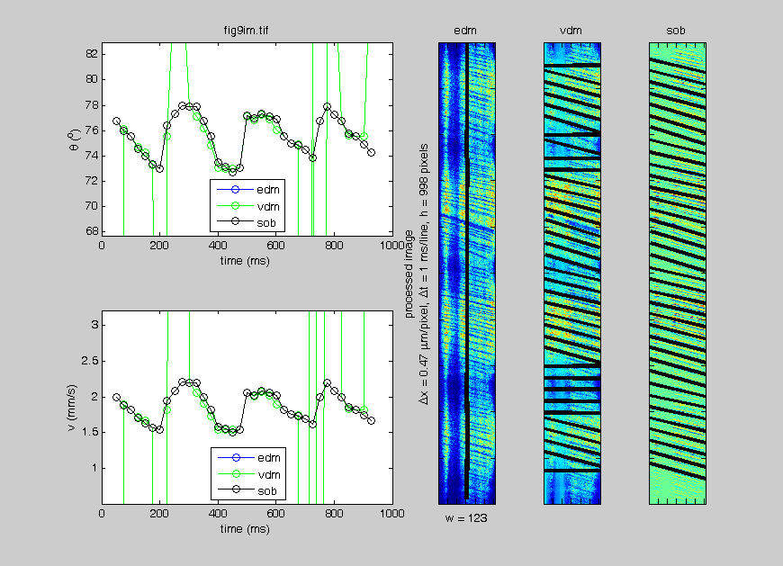

Contents
Initialize
imgtitle = 'fig9im.tif';
inputimg = imread(imgtitle);
imsize = size(inputimg);
inputimg = double(inputimg);
anglineth = 3;
dvov = 0.1/100;
firstthetastep = 45; thetarange = [0 179];
ds = 4;
showimg = 1;
delx = 0.47;
delt = 1;
hi = 100;
lineskip = 25;
xrange = [1 125];
if ~isempty(xrange) && length(xrange)<3
if length(xrange)==1
wi = xrange; xrange = [1 wi];
else
if xrange(1)>imsize(2)-1
xrange(1)=1;
end
if xrange(2)>imsize(2)-1
xrange(2)=imsize(2)-2;
end
if xrange(2)<xrange(1)
xrange = [xrange(1) xrange(2)];
end
wi = xrange(2)-xrange(1)+1;
end
else
wi = imsize(2)-2; xrange = [1 wi];
end
warning off
Process the image with different filters
curimtitle = {'edm','vdm','sob'}; curcolor = {'b','g','k','r','c','m'};
imgseg(:,:,1) = inputimg(2:end-1,2:end-1)-mean(mean(inputimg(2:end-1,2:end-1)));
imgseg(:,:,2) = bsxfun(@minus,inputimg(2:end-1,2:end-1),...
mean(inputimg(2:end-1,2:end-1),1));
imgseg(:,:,3) = filter2([1 2 1; 0 0 0; -1 -2 -1],inputimg,'valid');
imgsegsz = size(imgseg);
firstiter = (thetarange(1):firstthetastep:thetarange(2));
firstiter = firstiter-(firstiter(end)-firstiter(1))/2+1;
segend = hi:lineskip:imgsegsz(1);
segstart = segend-hi+1;
segn = length(segstart);
angle = nan(segn,9,imgsegsz(3));
utheta = cell(segn,imgsegsz(3));
uvar = cell(segn,imgsegsz(3));
Iterative Radon transform
for ii = 1:imgsegsz(3)
for jj = 1:segn
irl = 1;
curangle = 0; alltheta = []; allvar = []; iter = 0; thetastep = firstthetastep; curvarmax = 0;
curimgseg = imgseg(segstart(jj):segend(jj),xrange(1):xrange(2),ii);
if ii==1
curimgseg = curimgseg-mean(curimgseg(:));
end
if ii==2
curimgseg = bsxfun(@minus,curimgseg,mean(curimgseg,1));
end
while irl
iter = iter+1;
if iter==1
theta = firstiter;
else
thetastep = thetastep/2;
theta = (-3*thetastep+curangle):thetastep*2:(3*thetastep+curangle);
end
theta = mod(theta+90,180)-90;
R = radon(curimgseg,theta);
R(R==0) = nan;
curvar = nanvar(R);
alltheta = [alltheta theta];
allvar = [allvar curvar];
[Rvarmaxval,Rvarmaxin] = max(curvar);
if Rvarmaxval>curvarmax
curangle = theta(Rvarmaxin);
curvarmax = Rvarmaxval;
end
if irl==1 && thetastep<1
irl=2;
curmpa = abs(atand((dvov+1)*tand(curangle))-curangle);
ws = min(wi,ceil(hi*abs(tand(curangle))));
hs = min(hi,ceil(wi*abs(cotd(curangle))));
ns = floor(wi*delx/ds)*(hs==hi)+((hi*delx*ws)/(ds*hs))*(ws==wi);
dels1 = abs(atand(ws/hs)-atand((ws-1)/hs)*(ws>hs)-atand(ws/(hs-1))*(ws<=hs));
deln = dels1/ns;
end
if irl>1 && thetastep<deln
ws = min(wi,ceil(hi*abs(tand(curangle))));
hs = min(hi,ceil(wi*abs(cotd(curangle))));
ns = floor(wi*delx/ds)*(hs==hi)+((hi*delx*ws)/(ds*hs))*(ws==wi);
dels1 = abs(atand(ws/hs)-atand((ws-1)/hs)*(ws>hs)-atand(ws/(hs-1))*(ws<=hs));
deln = dels1/ns;
if thetastep<deln
break
end
end
if irl>1 && thetastep<curmpa
actdvovper = abs(tand(thetastep+curangle)/tand(curangle)-1)*100;
if dvov>actdvovper/100
break
else
irl = irl+1;
curmpa = atand((dvov+1)*tand(abs(curangle)))-abs(curangle);
end
end
end
angle(jj,1,ii) = curangle;
actdvovper = abs(tand(thetastep+curangle)/tand(curangle)-1)*100;
ws = min(wi,ceil(hi*abs(tand(curangle))));
hs = min(hi,ceil(wi*abs(cotd(curangle))));
ns = floor(wi*delx/ds)*(hs==hi)+((hi*delx*ws)/(ds*hs))*(ws==wi);
dels1 = abs(atand(ws/hs)-atand((ws-1)/hs)*(ws>hs)-atand(ws/(hs-1))*(ws<=hs));
deln = dels1/ns;
angle(jj,2:9,ii) = [thetastep segstart(jj)+hi/2 dels1 deln actdvovper iter irl tand(curangle)*delx/delt];
[utheta{jj,ii},um] = sort(alltheta);
uvar{jj,ii} = allvar(um);
end
if showimg
figure(1496);
subplot(1,imgsegsz(3)*2,ii+imgsegsz(3));
imagesc(imgseg(:,:,ii)); axis image; title(curimtitle{ii});
set(gca,'XTickLabel',[],'YTickLabel',[]);
hold on;
for jj=1:segn
[xp,yp] = pol2cart(mod(angle(jj,1,ii)*pi/180-pi/2,pi),wi/2);
line(xrange(1)+wi/2+[-xp xp],angle(jj,3,ii)-[-yp yp],...
'Color','black','LineWidth',anglineth,'EraseMode','xor');
end
hold off;
if ii==1
ylabel({'processed image';...
['\Deltax = ' num2str(delx) ' \mum/pixel, \Deltat = ' num2str(delt) ...
' ms/line, h = ' num2str(imgsegsz(1)) ' pixels']});
xlabel(['w = ' num2str(imgsegsz(2))]);
end
subplot(2,imgsegsz(3)*2,+(1:imgsegsz(3)))
plot(angle(:,3,ii)*delt,angle(:,1,ii),['-o' curcolor{ii} ]); hold on;
if ii==imgsegsz(3)
legend(curimtitle{1:ii},'Location','s');
xlabel('time (ms)'); ylabel('\theta (^o)'); hold off
title (imgtitle); ylim([min(angle(:,1,ii))-5 max(angle(:,1,ii))+5])
end
subplot(2,imgsegsz(3)*2,imgsegsz(3)*2+(1:imgsegsz(3)))
plot(angle(:,3,ii)*delt,angle(:,9,ii),['-o' curcolor{ii} ]); hold on;
if ii==imgsegsz(3)
legend(curimtitle{1:ii},'Location','s');
xlabel('time (ms)'); ylabel('v (mm/s)'); hold off
ylim([min(angle(:,9,ii))-1 max(angle(:,9,ii))+1])
end
end
end
warning on
